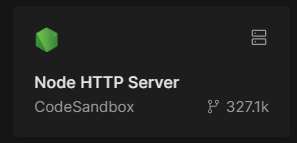
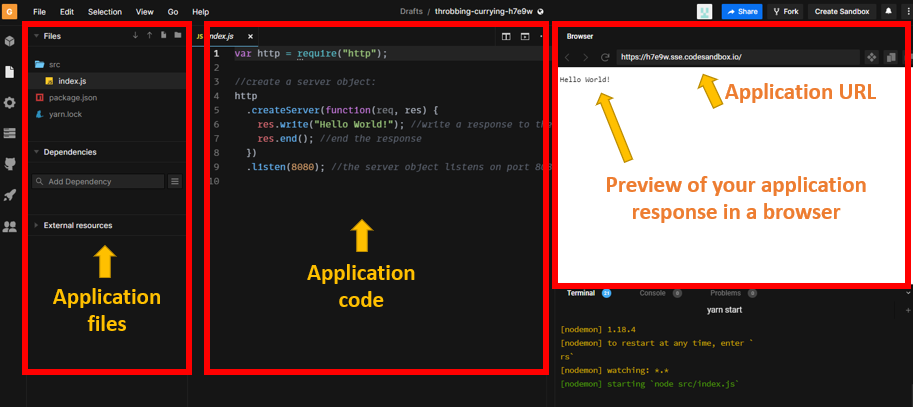
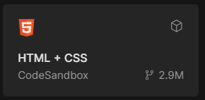
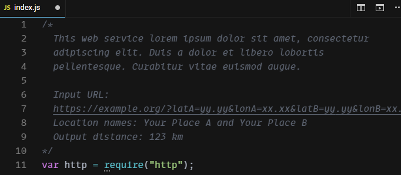

Assignment 2
DIY web service
Web services were introduced in the lessons as programs that allow communication between applications on the Internet, which in Web GIS usually means showing maps and data in a browser or app. In the previous assignment, roads, demographics, and basemap layers were “streamed” to our app via web services, and most of our assignments will pull data in this way. Today we will write the code to create our own web service from scratch.
To do this, we will need a web server to host our application and listen for requests from clients. We will use CodeSandbox.io as a free test environment.
The web service will perform a simple operation: find the distance between two points on Earth. The programming language we will use is JavaScript.
Lastly, we will create a webpage that lets users enter two locations and see the distance between them in kilometers, with our web service doing the calculation behind the scenes.
Table of Contents
Prep
Our distance calculator web service will need to be hosted on a web server, so first we will set up a server on CodeSandbox.
- Go to https://codesandbox.io and sign in with a Google or Github account.
- Click “+ Create”, search for “Node HTTP Server”, and click its tile.

- Options will appear to configure the server.
- Name: Distance Calc Server
- Visibility: Unlisted
- VM specs: Pico
- Click “Create Devbox”
- Once the server is created, you will see a workspace with three main panels:
- Files -
index.jsis created by default as our main application file. - Code -
index.jscontains some default JavaScript that we will modify. - Preview - Your application’s output will be previewed here in an emulated browser.

- Files -
- Note your app URL, similar to
https://abc123-8080.csb.app. You will use it later.
Data
The data to calculate distance will be the latitude and longitude of two locations, Location A and Location B; for example, 30 degrees latitude and -90 longitude for New Orleans and 30.45 degrees latitude and -91.187 longitude for Baton Rouge.
Example data:
| Location | Latitude | Longitude |
|---|---|---|
| A | 30.0 | -90.0 |
| B | 30.45 | -91.187 |
Steps
Part 1: Create a server app
- Delete all default code in
index.jsand copy and paste the code below. Read the lines beginning with//for comments describing what the code does. You do not need to understand every bit of code here, just the general purpose of each part.var http = require("http"); http .createServer(function (request, response) { // Read the URL used to contact the web service and extract the latitude and longitude values, saving them each to a variable var requestUrl = new URL("http://" + request.headers.host + request.url); var latA = requestUrl.searchParams.get("latA"); var lonA = requestUrl.searchParams.get("lonA"); var latB = requestUrl.searchParams.get("latB"); var lonB = requestUrl.searchParams.get("lonB"); // Use the spherical law of cosines formula to calculate distance in kilometers along the surface of a sphere. Source: https://www.movable-type.co.uk/scripts/latlong.html var φ1 = (latA * Math.PI) / 180; var φ2 = (latB * Math.PI) / 180; var Δλ = ((lonB - lonA) * Math.PI) / 180; var R = 6371; // Earth's radius in km var distance = Math.acos( Math.sin(φ1) * Math.sin(φ2) + Math.cos(φ1) * Math.cos(φ2) * Math.cos(Δλ) ) * R; // Output the calculated distance value to the client and complete the execution of the program. response.setHeader("Access-Control-Allow-Origin", "*"); response.write('{"distance": ' + distance.toFixed(2) + '}'); response.end(); }) .listen(8080); - Save
index.jsusing the keyboard shortcutCtrl+S(Cmd+Son Mac). - Refresh the preview (not your web browser); it should output
{"distance": 0.00}because we did not provide input in the URL. - In the preview address bar, paste the following text to the end of your app URL and press Enter:
?latA=30&lonA=-90&latB=30.45&lonB=-91.187. This assigns values to the lat/lon parameters.latA= 30lonA= -90latB= 30.45lonB= -91.187
Full URL example (replaceabc123with your app’s ID):
https://abc123-8080.csb.app?latA=30&lonA=-90&latB=30.45&lonB=-91.187.
- The web service should now output
{"distance": 124.54}because when you pressed Enter to preview the URL, the lat/lon values for a “point A” (New Orleans) and “point B” (Baton Rouge) were sent to your web service—the program you wrote to calculate distance.
Your web service is now complete. Your server is listening at that URL for requests from other apps, ready to plug their input into the distance formula and output the result.
Part 2: Create a client app
Now let us make an app to put the web service to use. Your app will be a webpage that:
- Lets users type in the lat/lon of two locations.
- Sends the lat/lon coordinates to your web service.
- Shows the web service output (distance in km) to the user.
You will create another sandbox to host this webpage.
- Follow the steps in the Prep section again to create another sandbox, but this time search for “HTML + CSS” and configure with the following options:
- Name: Distance Calc Client
- Visibility: Unlisted
- Runtime: Sandbox
- Click “Create Sandbox”.
- Once the sandbox is created, click
index.htmlin the Files panel. -
Delete the contents of
index.htmland replace with the code below, but again changeabc123to the ID of your own web service app.<!DOCTYPE html> <html> <head> <title>Distance Calculator</title> </head> <body> <h2>Enter latitude and longitude</h2> Place A <input type="text" id="latA" placeholder="Place A lat" /> <input type="text" id="lonA" placeholder="Place A lon" /> <hr /> Place B <input type="text" id="latB" placeholder="Place B lat" /> <input type="text" id="lonB" placeholder="Place B lon" /> <hr /> <input type="submit" id="submit" value="Calculate Distance (km)" /> <br /><br /> Distance (km): <h1 id="output">0</h1> <script src="https://code.jquery.com/jquery-3.6.0.min.js"></script> <script> $("#submit").click(function () { // Read the text input boxes to get the user's coordinates, add them to the URL to request the web service $.getJSON( "https://abc123-8080.csb.app", { latA: $("#latA").val(), lonA: $("#lonA").val(), latB: $("#latB").val(), lonB: $("#lonB").val() }, // Receive the response from the web service, print the distance on the webpage function (data) { $("#output").html(data.distance); } ); }); </script> </body> </html>This code is a mix of HTML and JavaScript to build a user interface.
- Save
index.htmlusing the shortcutCtrl+S(Cmd+Son Mac). You might have to refresh the preview. - Use the same lat/lon test values from Part 1 (30,-90 and 30.45,-91.187) and click the button to submit the form. It should print the distance value on the page.
- Click the “Share” button in CodeSandbox and copy the “Share URL”. You will submit this URL to complete the assignment.
- Test your URL in an incognito window to make sure it works.
Try it
Test and document
- Use Google Maps to get the latitude and longitude of two locations of your choosing by right-clicking the map to copy the coordinates at each place you choose.
- On your client app webpage, enter the new coordinate values into the form and observe the new distance value. Roughly verify the accuracy using the Measure Distance tool in Google Maps.
- At the top of your server app code, on Line 1, insert a new comment. Give the following in the comment:
- One or two sentences describing what your program does, expected input, and expected output.
- The names of the locations you used for your test coordinates (e.g., “the southwestern corner of Howe-Russell”, or “Beijing”).
- The output distance of your test.
- The comment should look similar to the screenshot below.

Checklist
- A “Node HTTP Server” sandbox (your server app; see Part 1). It should accept lat/lon inputs, calculate the distance between them, and output the distance.
- An “HTML + CSS” sandbox (your client app; see Part 2). It should include a form that sends a request to your web service sandbox. It should print the response somewhere on the webpage.
- A comment in the server app explaining what it does, the input you tested, and the expected output (see Try It).
- The URL to the client app sandbox.
Submit
Submit the URL to your “HTML + CSS” client app sandbox, copied in Part 2 Step 6.
The URL to your “HTML + CSS” sandbox should look like:
https://codesandbox.io/p/sandbox/yourappid
↑ Top
← Back to Assignments